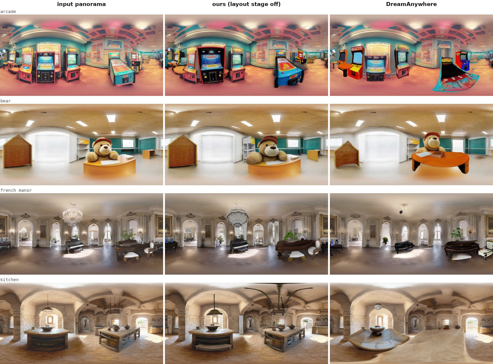

Generating large, navigable 3D scenes from text remains challenging: existing methods either degrade under camera motion or lack object-level editability. DreamAnywhere addressed this with an object-centric pipeline built around a 360° panorama scaffold, asserted to be modular. We present DreamAnywhereRevisited, which keeps the architecture and panorama front end unchanged and replaces every module downstream. A new semantic-inventory stage names, grounds, cross-view-consolidates and filters objects through an explicit keep/reject decision. Accepted objects are reconstructed as individual instances and placed via a physics-constrained optimiser that couples a cross-entropy method to rigid-body simulation, making stability and non-interpenetration first-class objectives. Background depth is re-estimated with Pi3X conditioned on the measured depth so the two align by construction, and the room point cloud is built by direct panorama unprojection with solid-angle-weighted subsampling. Novel viewpoints are synthesised by GEN3C conditioned on point-cloud renderings, replacing score distillation with real multi-view photometric evidence. The resulting scene is composed into an editable 3DGS representation with screen-space ambient occlusion.
We evaluate DreamAnywhereRevisited against three state-of-the-art methods (WorldExplorer, LayerPano3D, DreamScene360) on walk-through video quality and against the conference version DreamAnywhere on its original scenes. We additionally report per-stage measurements over multiple scenes, an ablation of the decision model, a video-diffusion backbone comparison, and a round-trip self-consistency test against the input panorama. DreamAnywhereRevisited demonstrates that individual pipeline modules can be swapped and augmented as the state-of-the-art progresses, improving on the conference version in the cycle-consistency test and on most walk-through video metrics, while remaining modular and object-centric.
Walk-through renderings of the same scene prompt, on the same camera path, for ours, WorldExplorer, LayerPano3D and DreamScene360. Ours keeps object silhouettes and room structure intact as the camera leaves the panorama centre, where the baselines smear or tear.
cozy_cafe
bioluminescent
french manor
industrial
The same scenes from the original DreamAnywhere paper, rendered on the same camera path. The architecture and panorama front end are unchanged; everything downstream was replaced.
bathroom
french manor
arcade
alice

A self-consistency test: the delivered 3D scene is re-rendered back into an equirectangular panorama from the original capture point and compared against the panorama it was built from. Left is the input panorama, centre is our scene re-rendered with the layout stage disabled, and right is DreamAnywhere's re-rendered panorama. All three are scored on the same perspective views, sampled with one identical set of view directions, so a frame-order or FOV mismatch cannot silently compare two different viewpoints. Ours keeps object identity, placement and room layout closer to the input.